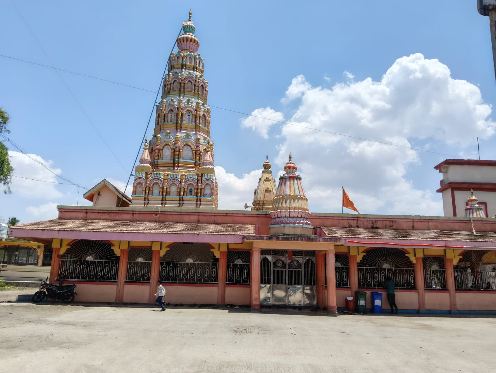
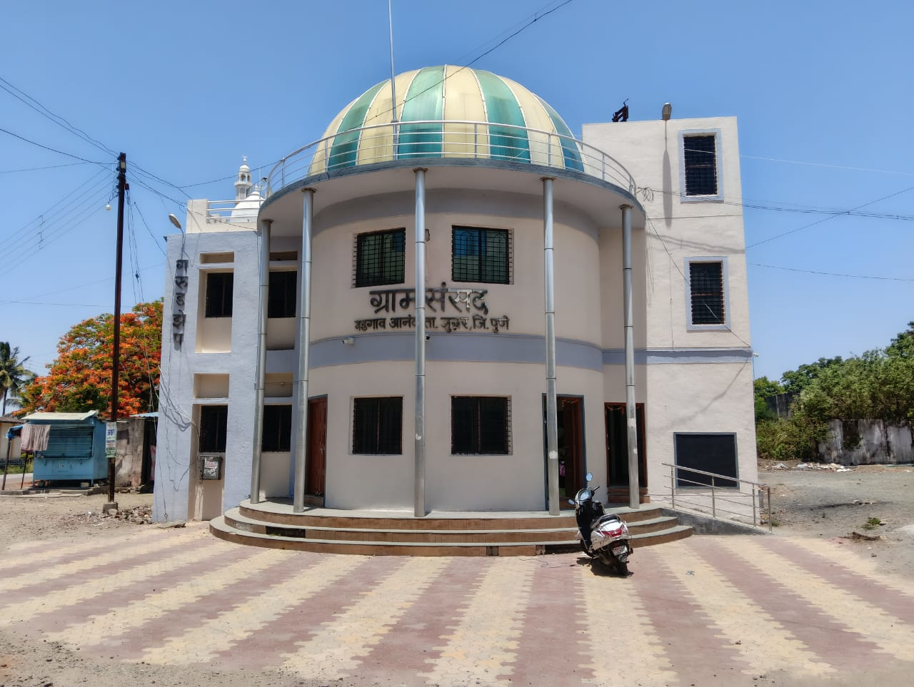
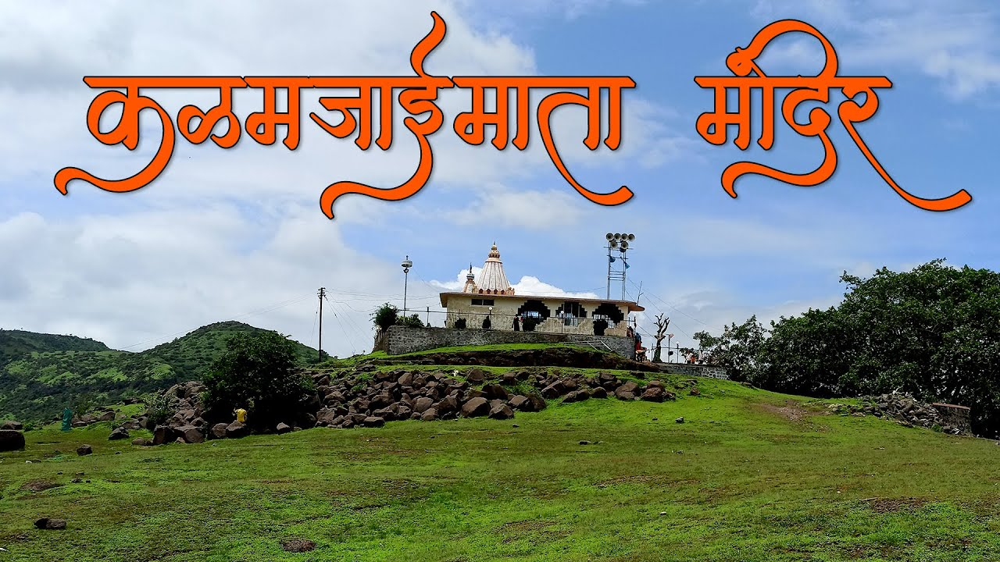
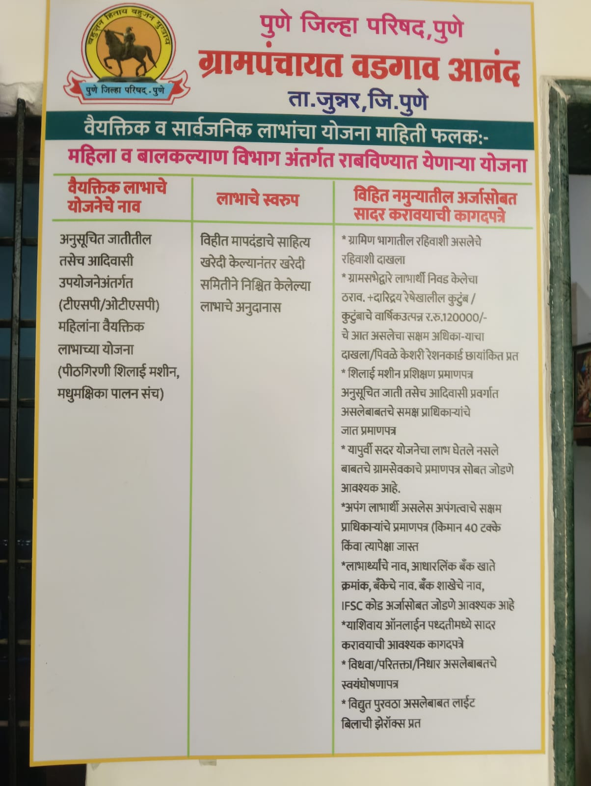
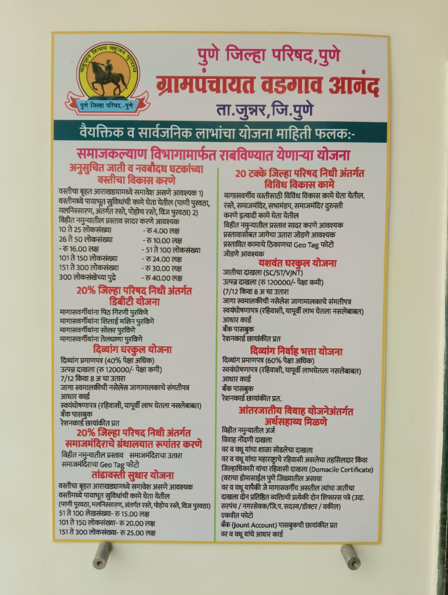
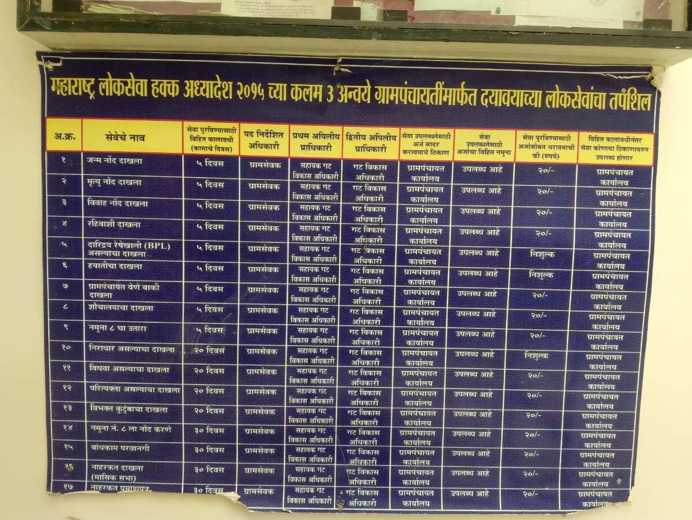

Village Gallery



Welcome to the official digital portal of Vadgaon Anand Gram Panchayat, Taluka Junnar, District Pune, Maharashtra. Dedicated towards transparency, smart governance and rural development.

Vadgaon Anand is a culturally rich village situated in Junnar Taluka of Pune District. The village is known for its heritage temples, peaceful environment, community participation and progressive rural development initiatives.
The Gram Panchayat actively works for sanitation, transparency, government scheme awareness, digital governance and public welfare.
The village represents a blend of tradition and modern development, making it an ideal example of smart village transformation.
Population
Families
Literacy
Village Participation
Information regarding welfare schemes, employment schemes and development initiatives.
Road development, cleanliness, water facilities and rural infrastructure projects.
Transparency, digital information sharing and public awareness initiatives.



Public information regarding welfare and support schemes.

Village employment and rural development awareness programs.

Information regarding social welfare and public development schemes.

Transparency and citizen information display board.